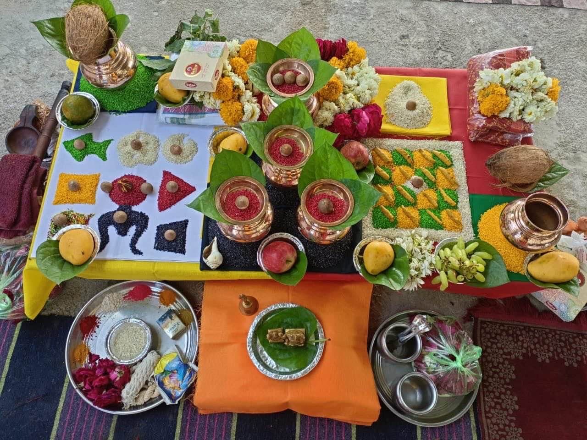
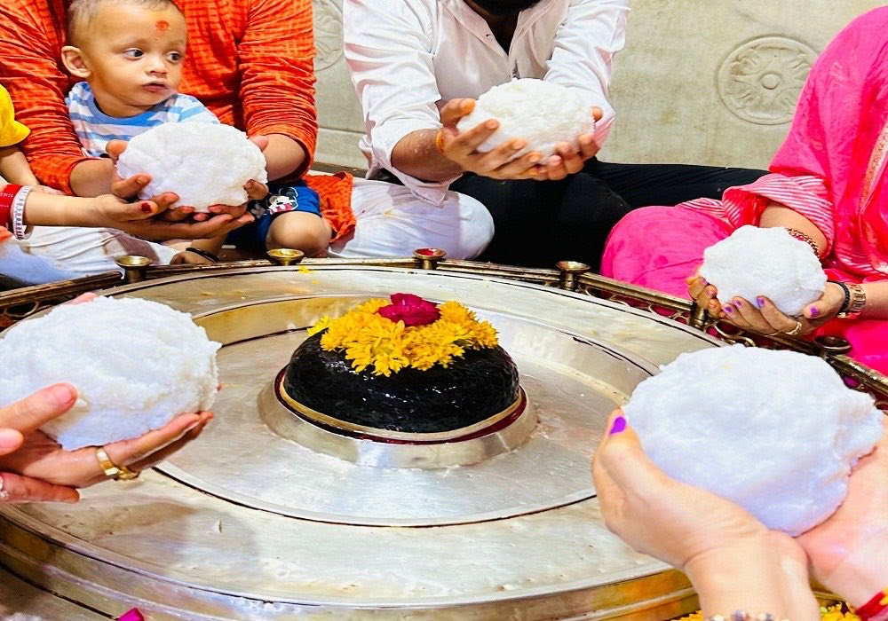
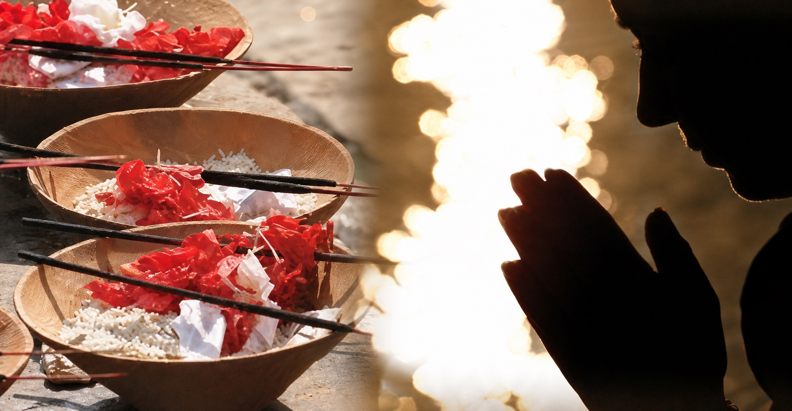
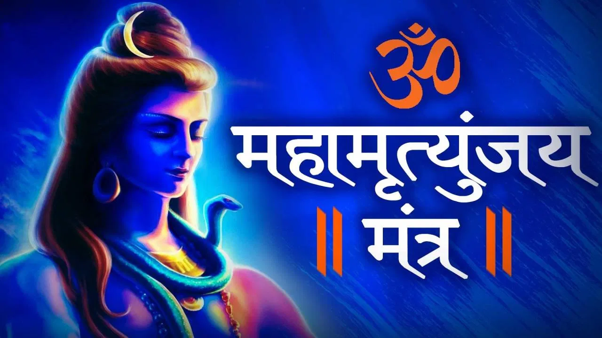
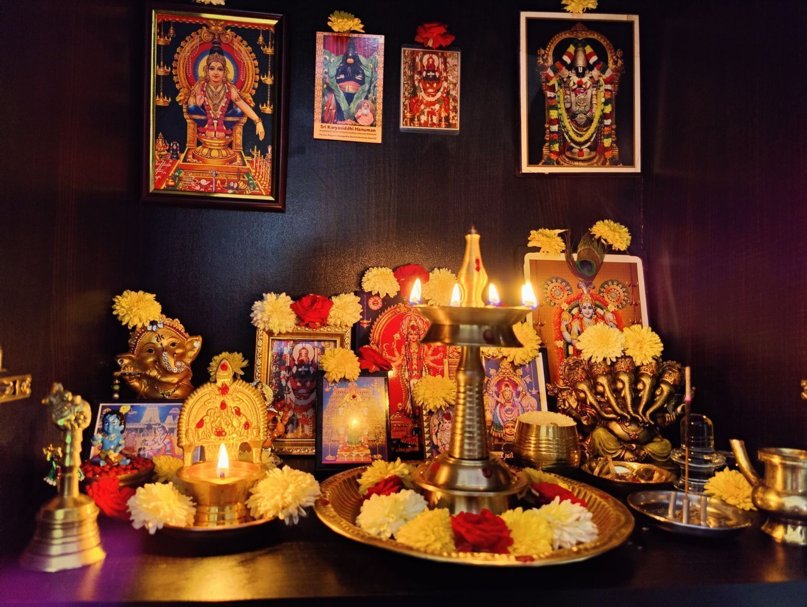
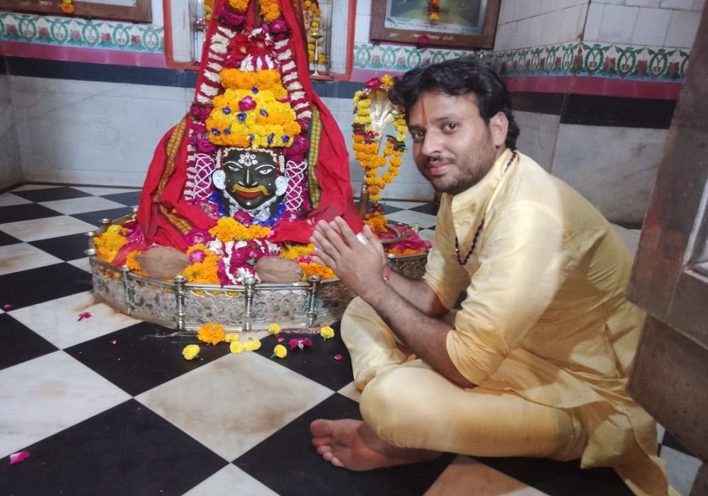
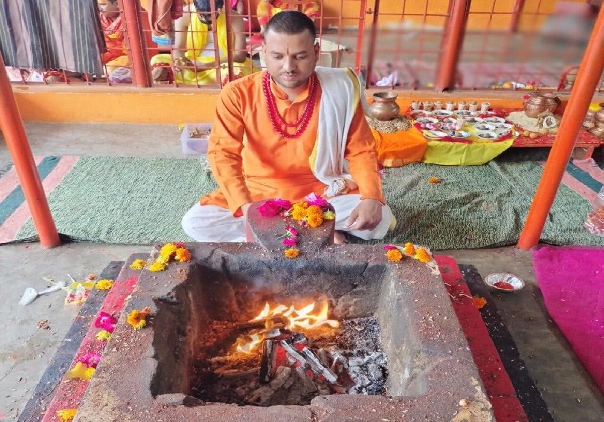
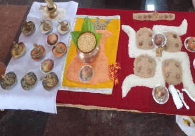
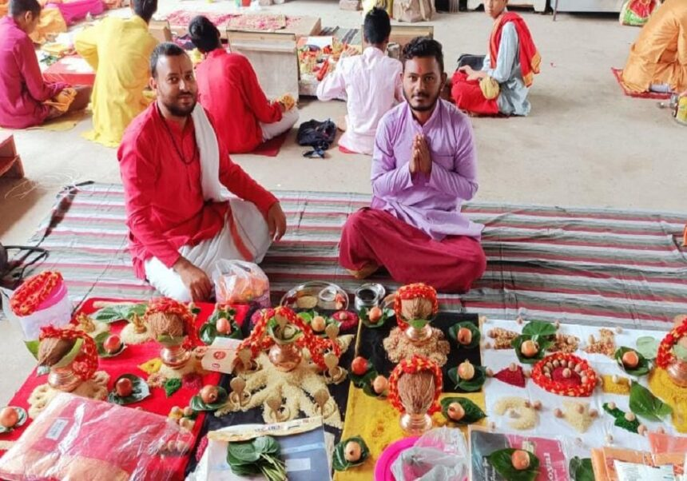
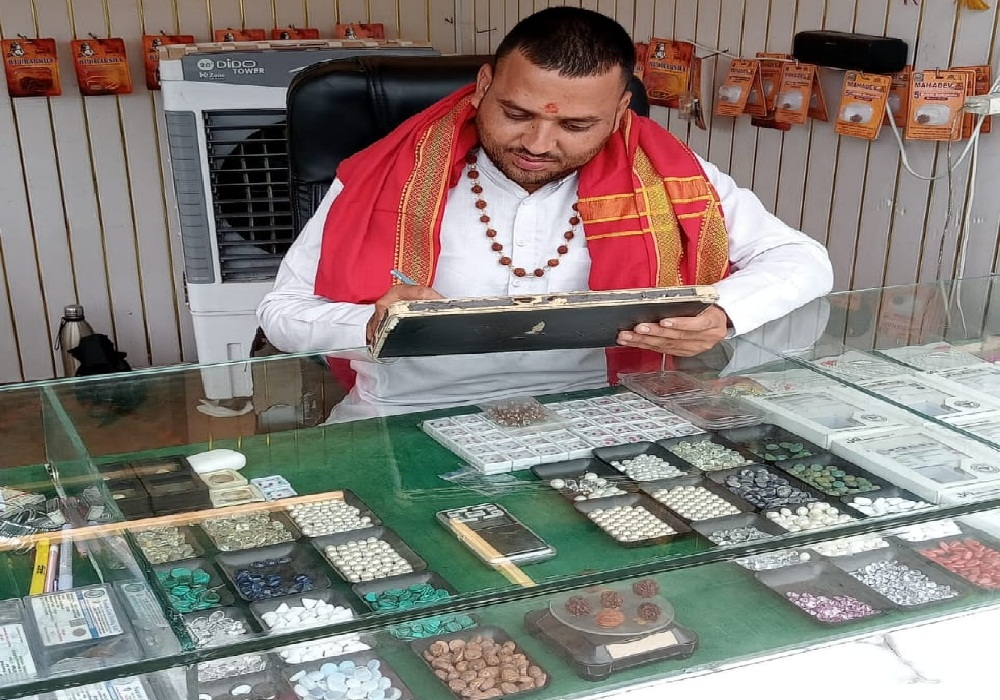

विशेष पूजाॐ
कालसर्प दोष पूजा
कुंडली में राहु-केतु से जुड़े कालसर्प योग के लिए उज्जैन में शास्त्रोक्त पूजन एवं मार्गदर्शन।
पूरी जानकारी →ॐ महाकाल की नगरी उज्जैन
पंडित राम लखन शर्मा जी के मार्गदर्शन में कालसर्प दोष, मंगल दोष, पितृ शांति एवं विशेष वैदिक अनुष्ठान। पूजा की विधि, सामग्री और समय की स्पष्ट जानकारी पहले ही प्राप्त करें।
प्रमुख पूजा सेवाएँ
हर पूजा की विधि और संकल्प अलग होता है। विस्तृत जानकारी पढ़ें या पंडित जी से सीधे मार्गदर्शन लें।

विशेष पूजाकुंडली में राहु-केतु से जुड़े कालसर्प योग के लिए उज्जैन में शास्त्रोक्त पूजन एवं मार्गदर्शन।
पूरी जानकारी →
विवाह एवं जीवन में मंगल ग्रह से संबंधित बाधाओं के लिए मंगलनाथ नगरी में विशेष पूजन।
पूरी जानकारी →
पूर्वजों की शांति और पितृ संबंधी दोषों के निवारण हेतु विधिपूर्वक तर्पण एवं अनुष्ठान।
पूरी जानकारी →
आरोग्य, मानसिक शांति और सकारात्मक ऊर्जा हेतु वैदिक मंत्र जाप एवं हवन।
पूरी जानकारी →
घर, कार्यालय या नए प्रतिष्ठान में शांति और शुभता के लिए वास्तु पूजन।
पूरी जानकारी →विवाह संस्कार, अर्क-कुंभ विवाह और पारिवारिक मांगलिक अनुष्ठान।
पूरी जानकारी →

पंडित जी का परिचय
पंडित राम लखन शर्मा जी उज्जैन में वैदिक कर्मकांड, दोष निवारण और मांगलिक अनुष्ठानों का विधिवत संचालन करते हैं।
प्रत्येक यजमान को पूजा से पहले प्रक्रिया, आवश्यक सामग्री, संभावित अवधि और स्थल की जानकारी सरल भाषा में दी जाती है। हमारा उद्देश्य श्रद्धा के साथ एक सुव्यवस्थित और सहज पूजा अनुभव देना है।
व्यक्तिगत मार्गदर्शनकुंडली और आवश्यकता के अनुसार चर्चा
विधिपूर्वक संकल्पगोत्र, नाम और उद्देश्य के साथ पूजन
स्थानीय व्यवस्थाउज्जैन में स्थल और सामग्री संबंधी सहयोग
शिक्षा एवं प्रमाणिकता
वैदिक अध्ययन, पूजाविधि, कर्मकाण्ड और ज्योतिष के क्षेत्र में प्राप्त प्रमाणपत्र एवं सम्मान। किसी भी दस्तावेज़ को स्पष्ट देखने के लिए उस पर क्लिक करें।
अन्य अभिलेख अध्ययन, परीक्षा, सेवा एवं प्राप्त सम्मानों के दस्तावेज़
सरल बुकिंग प्रक्रिया
पहली बातचीत से लेकर पूजा संपन्न होने तक आपको हर आवश्यक जानकारी और सहायता दी जाती है।
कॉल या WhatsApp पर अपनी पूजा और तारीख की आवश्यकता बताएं।
उपयुक्त तिथि, मुहूर्त, स्थान और पूजा की अवधि समझें।
सामग्री, वस्त्र और पूजा से पहले की तैयारी की सूची प्राप्त करें।
संकल्प और शास्त्रोक्त विधि के अनुसार अनुष्ठान पूरा करें।
पूजा हेतु अनुरोध
फॉर्म भरें। आपकी जानकारी केवल पूजा संबंधी संपर्क के लिए उपयोग की जाएगी।
पूजा झलकियाँ




सामान्य प्रश्न
अन्य प्रश्न के लिए पंडित जी से सीधे बात करें।
+91 62636 35078 →अपना नाम, गोत्र (यदि ज्ञात हो), पूजा का उद्देश्य, संभावित तारीख और आने वाले सदस्यों की संख्या बताएं।
पूजा के अनुसार आवश्यक सामग्री की सूची और स्थानीय व्यवस्था की जानकारी पहले से साझा की जाती है।
अवधि अनुष्ठान के प्रकार पर निर्भर करती है। संपर्क के समय अनुमानित समय स्पष्ट कर दिया जाता है।
अधिकांश पूजाओं में परिवार के सदस्य सम्मिलित हो सकते हैं। विशेष नियम पूजा के अनुसार बताए जाते हैं।
उचित पूजा, तिथि और तैयारी के लिए सीधे पंडित जी से मार्गदर्शन लें।